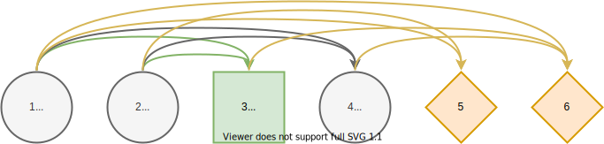
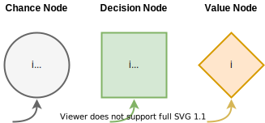
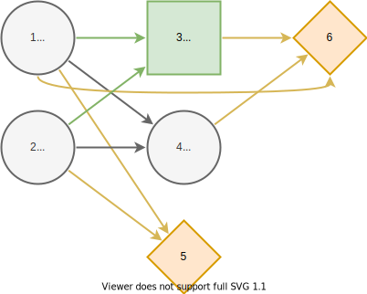

Influence Diagram
Introduction
Decision programming uses influence diagrams, a generalization of Bayesian networks, to model multi-stage decision problems under uncertainty. This section defines the influence diagrams and discusses their properties. It is based on the definitions in [1], [2], and [3].
Definition

We define the influence diagram as a directed, acyclic graph $G=(C,D,V,A,S).$ We describe the nodes $N=C∪D∪V$ with $C∪D=\{1,...,n\}$ and $n=|C|+|D|$ as follows:
- Chance nodes $C⊆\{1,...,n\}$ (circles) represent uncertain events associated with random variables.
- Decision nodes $D⊆\{1,...,n\}$ (squares) correspond to decisions among discrete alternatives.
- Value nodes $V=\{n+1,...,n+|V|\}$ (diamonds) represent consequences that result from the realizations of random variables at chance nodes and the decisions made at decision nodes.
The connections between different nodes (arrows) are called arcs $a \in A$. The arcs represent different dependencies between the nodes.
We define the information set $I$ of node $j∈N$ as the set of predecessors of $j$ in the graph:
\[I(j)⊆\{i∈C∪D ∣ (i,j) \in A\, i<j\}\]
Practically, the information set is a collection of arcs in the reverse direction in the graph. Informally, it tells us which node's information is available to the current node. The conditions enforce that the graph is acyclic, and there are no arcs from value nodes to other nodes.
In an influence diagram, each chance and decision node $j∈C∪D$ is associates with a finite number of states $S_j$ that we encode using integers $S_j=\{1,...,|S_j|\}$ from one to number of states $|S_j|≥1.$ A node $j$ is trivial if it has only one state, $|S_j|=1.$ We refer to the collection of all states $S=\{S_1,...,S_n\}$ as the state space.
Root and Leaf Nodes
A chance or decision node is a root node if it is not affected by other chance or decision nodes. Formally, node $j∈C∪D$ is a root node if $I(j)=∅.$
A chance or decision node is a leaf node if it does not affect other chance or decision nodes. Formally, node $j∈C∪D$ is a leaf node if $j∉I(i)$ for all $i∈C∪D.$
Drawing Nodes and Arcs

We use a circle to represent chance nodes, a square to represent decision nodes, and a diamond to represent value nodes. The symbol $i$ represents the node's index and symbol $S_i$ the states of the chance or decision node. We use the following colors and styling:
- Chance nodes: Fill color
F5F5F5and line color666666. - Decision nodes: Fill color
D5E8D4and line color82B366 - Value nodes: Fill color
FFE6CCand line colorD79B00 - Linewidth
2ptand perimeter2pt(padding around the node).
We represent directed arcs using arrows from a source node to a target node, colored with the target node's line color. We recommend diagrams.net for drawing graphs.
Drawing Layered Graph

We showed the influence diagram as a linear graph in the Definition section. We can also draw a more concise layered graph, which is better at displaying the influence relationship structure — only nodes at smaller depth influence nodes at greater depth. Also, root and leaf nodes are visible from the layered form.
We define the depth of a node $j∈N$ as follows. Root nodes have a depth of one
\[\operatorname{depth}(j)=1,\quad I(j)=∅.\]
Other nodes have a depth of one greater than the maximum depth of its predecessors
\[\operatorname{depth}(j)=\max_{i∈I(j)} \operatorname{depth}(i) + 1,\quad I(j)≠∅.\]
We can then draw the layered graph by grouping the nodes by their depth, ordering the groups by increasing depth and increasing indices order within each group.
Other Properties
In this section, we define more properties for influence diagrams.
Discrete influence diagram refers to a countable state space. Otherwise, the influence diagram is continuous. We can discretize continuous influence diagrams using discrete bins.
Two nodes are sequential if there exists a directed path from one node to the other in the influence diagram. Otherwise, the nodes are parallel. Sequential nodes often model a time dimension.
Repeated subdiagram refers to a recurring pattern within an influence diagram. Often, influence diagrams do not have a unique structure, but they consist of a repeated pattern due to the underlying problem's properties.
Limited-memory influence diagram refers to an influence diagram where the no-forgetting assumption does not hold. In practice, this means that the decision maker does not necessarily remember all previous information. For example, the treatment decisions in the Pig Breeding example are made without full information about the treatment history.
Isolated subdiagrams refer to unconnected diagrams within an influence diagram. That is, there are no undirected connections between the diagrams. Therefore, one isolated subdiagram's decisions affect decisions on the other isolated subdiagrams only through the utility function.
A chance or decision node is redundant if it is a leaf node and not in any value node's information set. Formally, if $j∈C∪D$ is a leaf node and there does not exist a value node $i∈V$ such that $j∈I(i)$, then node $j$ is redundant.
References
- 1Salo, A., Andelmin, J., & Oliveira, F. (2019). Decision Programming for Multi-Stage Optimization under Uncertainty, 1–35. Retrieved from http://arxiv.org/abs/1910.09196
- 2Howard, R. A., & Matheson, J. E. (2005). Influence diagrams. Decision Analysis, 2(3), 127-143. https://doi.org/10.1287/deca.1050.0020
- 3Shachter, R. D. (1986). Evaluating influence diagrams. Operations research, 34(6), 871-882. https://doi.org/10.1287/opre.34.6.871